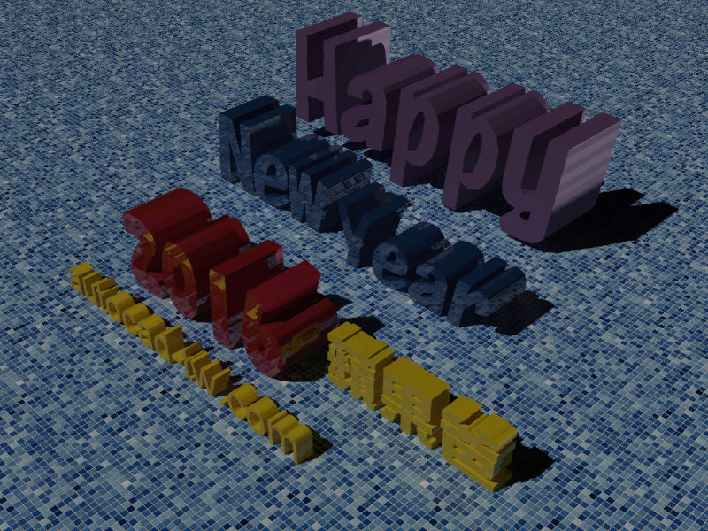
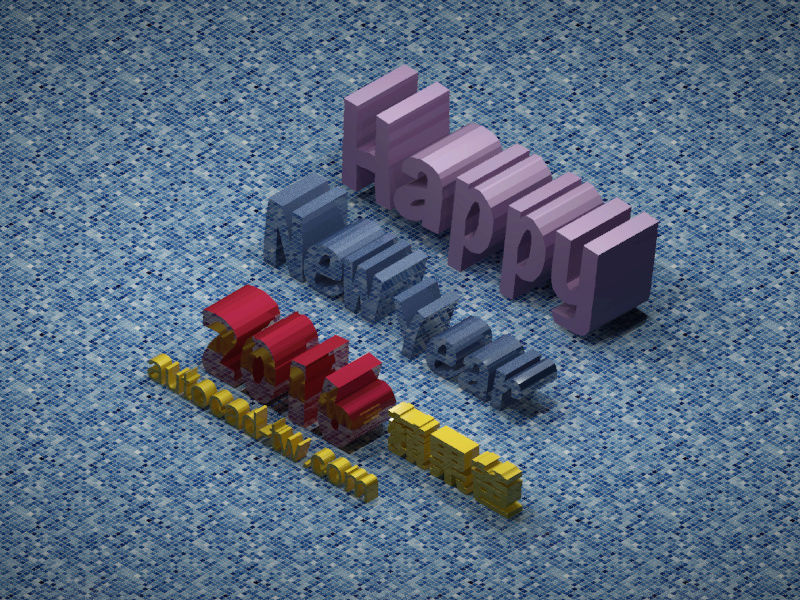

大家好：
去年底發表了 happy new year 2016 新年快樂！
這篇彩現(渲染)圖片是用2016版本快速完成，經過很多會員朋友詢問也想了解，在這裡特別分享製作過程及DWG檔案下載喔～
新版本的「材質庫」很齊全使用也很簡單，有興趣的朋友快來試試吧～
完成彩現的朋友別忘記po上來分享，最有創意的朋友可以獲得「積分+1」^_^



影片教學
2016彩現範例_AutoCAD顧問-範例檔下載：
備用: https://app.box.com/s/eii7ebh8xyzsfl86ycixberxssvzr0ti
相關討論文章：